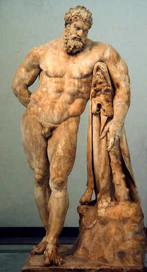

Héracles (na mitologia romana designado por Hércules) era um semideus, filho de Zeus e de Alcmene. Modelo de excelência e de masculinidade, um dos seus atributos era a sua força extraordinária. Muitas histórias são contadas em relação à sua vida. A mais famosa é a dos “Doze Trabalhos de Héracles”.